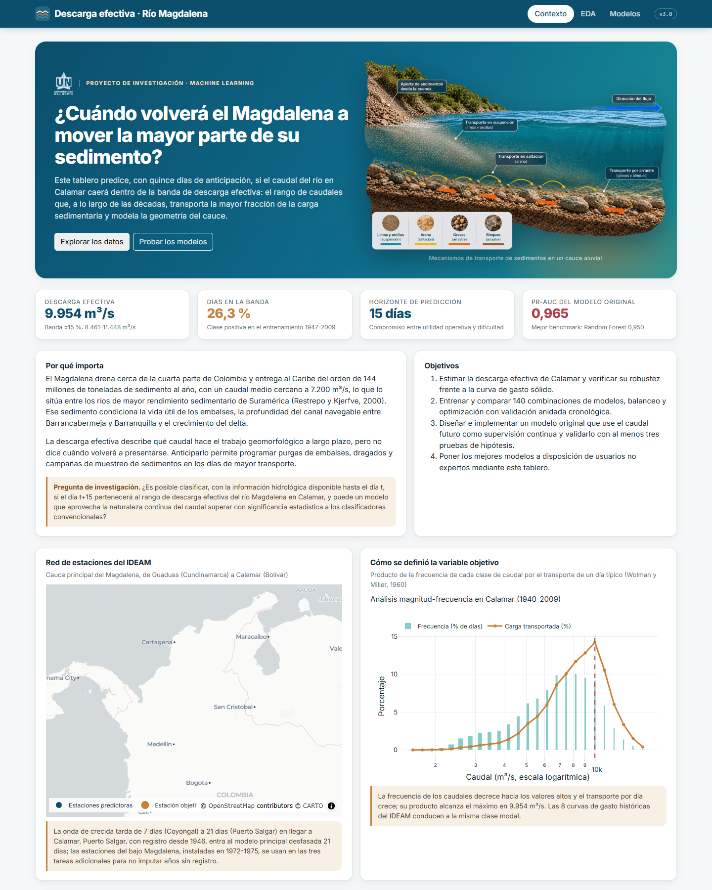
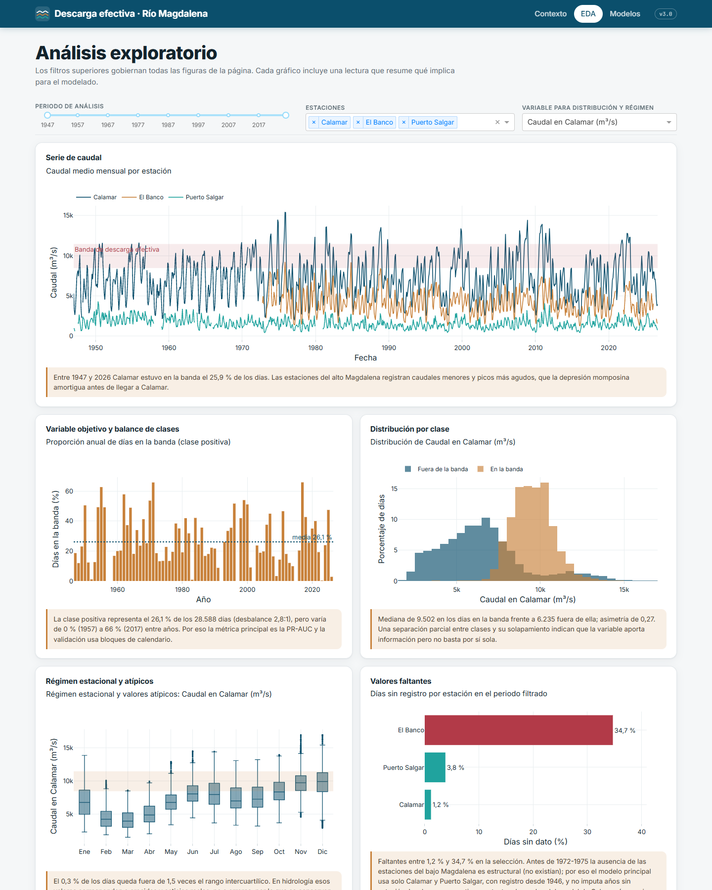
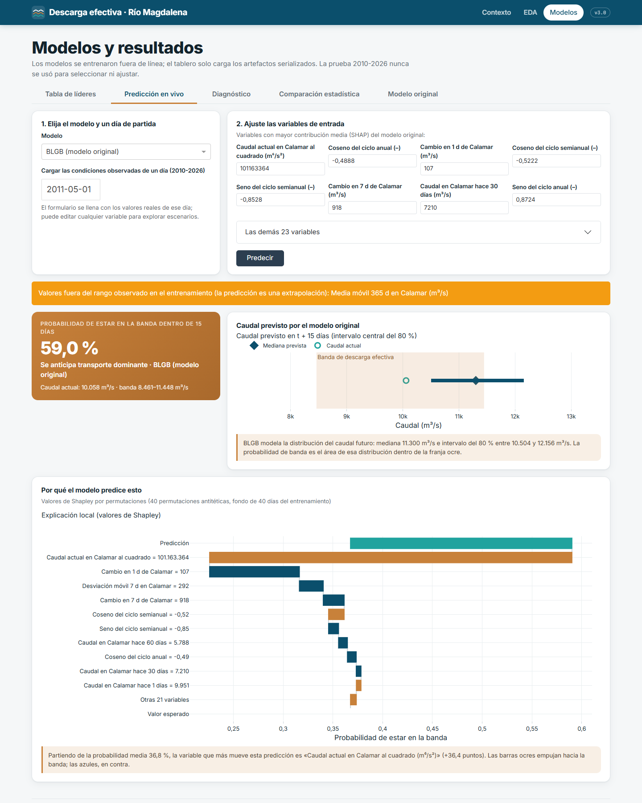

Aplicación interactiva#
La aplicación interactiva pone los resultados del estudio a disposición de una persona no especialista: un operador de embalse, un ingeniero de la autoridad del canal navegable o un investigador del delta. Cada elemento responde a una pregunta concreta de ese usuario: qué es la descarga efectiva y por qué importa (Contexto), cómo se comporta el río y qué datos sostienen el modelo (EDA), y qué probabilidad hay de que el río entre en la banda dentro de quince días, con qué incertidumbre y por qué razones (Modelos).


Figura 27 Página de Contexto: encabezado con la pregunta del usuario, cifras clave, mapa de la red de estaciones y análisis magnitud-frecuencia que define la variable objetivo.#
Arquitectura#
La aplicación es multipágina (use_pages=True) y separa la interfaz, la lógica de datos y los
artefactos de modelo:
proyecto-ml-final/
├── app.py punto de entrada; expone server para gunicorn
├── pages/
│ ├── contexto.py sección 1: problema, pregunta, datos, metodología, limitaciones
│ ├── eda.py sección 2: filtros globales y figuras con callbacks
│ └── modelos.py sección 3: líderes, predicción, diagnóstico, estadística, modelo propuesto
├── src/
│ ├── data.py carga única y caché (lru_cache) de tablas y artefactos
│ ├── plots.py funciones de graficación con una plantilla Plotly unificada
│ ├── evaluation.py calibración y valores de Shapley por permutaciones
│ ├── original_model.py clase del modelo propuesto
│ └── ... ETL, modelos, optimizadores, pruebas estadísticas
├── artifacts/ modelos serializados (joblib) y metadata.json
├── data/dashboard/ tablas livianas precalculadas que consume la aplicación
├── assets/ hoja de estilo, logotipo
├── tests/ pruebas unitarias (pytest)
├── book/ fuentes de este libro
├── requirements.txt dependencias de producción con versiones exactas
└── render.yaml configuración del servicio en Render
El servidor nunca entrena ni optimiza modelos. scripts/final_models.py reentrena las mejores
combinaciones y el modelo propuesto, los serializa en artifacts/ y verifica la prueba de ida y
vuelta; scripts/exportar_dashboard.py precalcula las tablas y curvas de data/dashboard/. Al
arrancar, src/data.py carga cada recurso una sola vez y lo conserva en memoria; los callbacks
solo filtran tablas ya cargadas o llaman a predict_proba de un artefacto.
Decisiones de diseño#
La identidad visual usa cinco colores definidos una sola vez en src/config.py y repetidos en
la hoja de estilo, en la plantilla de Plotly y en las figuras de este libro: azul profundo para
el río y los elementos principales, ocre para el sedimento y la clase positiva, turquesa para
series secundarias, carmín para la banda de descarga efectiva y las alertas, y gris pizarra
para el texto secundario. La tipografía es Inter, con números en JetBrains Mono. La barra de
navegación es fija y la rejilla de dash-bootstrap-components reorganiza las tarjetas en una
columna en pantallas de tableta y teléfono.
Cada figura va acompañada de una lectura en un recuadro ocre. En la página de EDA esas lecturas se recalculan con los filtros, de modo que la cifra que se comenta corresponde siempre al periodo y las estaciones seleccionados. La información nunca depende solo del color: la clase positiva se distingue también por la leyenda y el texto emergente, y en los gráficos de combinaciones el optimizador se codifica con la forma del símbolo.


Figura 28 Página de EDA: filtros globales de periodo, estaciones y variable, que actualizan todas las figuras mediante callbacks.#
Predicción en vivo#
El formulario se genera a partir del esquema de entrada guardado en el metadata.json de cada
artefacto (nombre, tipo, rango observado y mediana de cada variable). Para que un usuario no
experto no tenga que escribir 43 valores, puede elegir un día del periodo de prueba y el
formulario se llena con las condiciones observadas ese día; las ocho variables de mayor
contribución media al modelo propuesto quedan visibles y las demás, en un acordeón. Los valores
fuera del rango de entrenamiento producen una advertencia de extrapolación, y una entrada
inválida produce un mensaje de error en lugar de detener la aplicación.
La salida combina tres elementos. La probabilidad de banda del modelo elegido, con la
recalibración de Platt cuando mejora el error de calibración. El intervalo de predicción del
caudal a quince días, que proviene del modelo propuesto porque es el único de los modelos desplegados que modela la
distribución del caudal futuro. Y una explicación local por valores de Shapley, calculada en el
servidor con el estimador por permutaciones de src/evaluation.py, que funciona con cualquier
modelo sin cargar la biblioteca shap y cumple la propiedad de eficiencia (las contribuciones
suman la diferencia entre la predicción y el valor esperado).


Figura 29 Predicción en vivo: probabilidad de banda, intervalo del caudal previsto y explicación local.#
Despliegue en Render#
La aplicación está desplegada en https://descarga-efectiva-magdalena.onrender.com. El repositorio
incluye render.yaml, que define un servicio web de Python con
pip install -r requirements.txt como comando de construcción y gunicorn app:server como
comando de inicio, y fija la versión de Python. El procedimiento es el siguiente:
Verificar localmente con
python app.pyque todas las páginas y callbacks funcionan.Confirmar que
requirements.txtfija versiones exactas, incluidasgunicorny las mismas versiones descikit-learn,imbalanced-learnyxgboostcon que se serializaron los artefactos, porquejoblibno garantiza la compatibilidad entre versiones.Subir el repositorio a GitHub.
En Render, crear un servicio a partir del Blueprint del repositorio (New → Blueprint), que lee
render.yaml, o un Web Service con los mismos comandos.Revisar los registros de construcción y comprobar en la URL pública las tres páginas, el formulario de predicción y el cambio de modelo en el diagnóstico.
El plan gratuito suspende el servicio tras un periodo de inactividad y limita la memoria. Para
respetar ese límite, los artefactos se comprimen con joblib.dump(..., compress=3), las tablas
de la aplicación se reducen a lo que cada figura necesita y los Random Forest se serializan con el
número de árboles que eligió la optimización, sin ampliaciones.